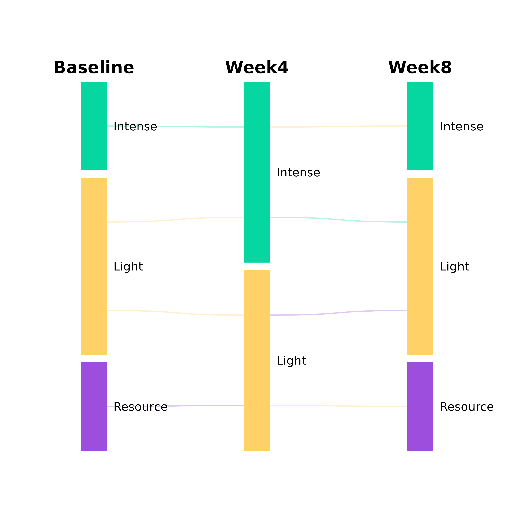

Creates an alluvial-style diagram where each individual's trajectory is shown
as a separate line. This is an alias for plot_transitions() with
track_individuals = TRUE.
Usage
plot_trajectories(
x,
from_title = NULL,
title = NULL,
from_colors = NULL,
flow_color_by = "first",
node_width = 0.08,
node_border = NA,
node_spacing = 0.02,
label_size = 3.5,
label_position = c("beside", "inside", "above", "below", "outside"),
mid_label_position = NULL,
label_halo = TRUE,
label_color = "black",
label_fontface = "plain",
label_nudge = 0.02,
title_size = 5,
title_color = "black",
title_fontface = "bold",
curve_strength = 0.6,
line_alpha = 0.3,
line_width = 0.5,
jitter_amount = 0.8,
show_totals = FALSE,
total_size = 4,
total_color = "white",
total_fontface = "bold",
show_values = FALSE,
value_position = c("center", "origin", "destination"),
value_size = 3,
value_color = "black",
value_halo = NULL,
value_fontface = "bold",
value_nudge = 0.03,
value_min = 0,
value_digits = 2,
column_gap = 1,
proportional_nodes = TRUE,
node_label_format = NULL,
bundle_size = NULL,
bundle_legend = TRUE,
bundle_legend_size = 3,
bundle_legend_color = "grey50",
bundle_legend_fontface = "italic",
bundle_legend_position = c("bottom", "top")
)Arguments
- x
Input data in one of several formats:
A transition matrix (rows = from, cols = to, values = counts)
Two vectors: pass
beforeas x andafteras second argument (contingency table computed automatically, like chi-square)A 2-column data frame (raw observations; table computed automatically)
A data frame with columns: from, to, count
A list of matrices for multi-step transitions
- from_title
Title for the left column. Default "From". For multi-step, use a vector of titles (e.g., c("T1", "T2", "T3", "T4")).
- title
Optional plot title. Applied via ggplot2::labs(title = title).
- from_colors
Colors for left-side nodes. Default uses palette.
- flow_color_by
Color flows by "source", "destination", or NULL (use flow_fill). Default NULL.
- node_width
Width of node rectangles (0-1 scale). Default 0.08.
- node_border
Border color for nodes. Default NA (no border).
- node_spacing
Vertical spacing between nodes (0-1 scale). Default 0.02.
- label_size
Size of node labels. Default 3.5.
- label_position
Position of node labels: "beside" (default), "inside", "above", "below", "outside". Applied to first and last columns. See
mid_label_positionfor middle columns.- mid_label_position
Position of labels for intermediate (middle) columns. Same options as
label_position. Default NULL useslabel_positionvalue.- label_halo
Logical: add white halo around labels for readability? Default TRUE.
- label_color
Color of state name labels. Default "black".
- label_fontface
Font face of state name labels ("plain", "bold", "italic", "bold.italic"). Default "plain".
- label_nudge
Distance between node edge and label (in plot units). Default 0.02. Increase for more spacing.
- title_size
Size of column titles. Default 5.
- title_color
Color of column title text. Default "black".
- title_fontface
Font face of column titles. Default "bold".
- curve_strength
Controls bezier curve shape (0-1). Default 0.6.
- line_alpha
Alpha for individual tracking lines. Default 0.3.
- line_width
Width of individual tracking lines. Default 0.5.
- jitter_amount
Vertical jitter for individual lines (0-1). Default 0.8.
- show_totals
Logical: show total counts on nodes? Default FALSE.
- total_size
Size of total labels. Default 4.
- total_color
Color of total labels. Default "white".
- total_fontface
Font face of total labels. Default "bold".
- show_values
Logical: show transition counts on flows? Default FALSE.
- value_position
Position of flow values: "center", "origin", "destination", "outside_origin", "outside_destination". Default "center".
- value_size
Size of value labels on flows. Default 3.
- value_color
Color of value labels. Default "black".
- value_halo
Logical: add halo around flow value labels? Default NULL (inherits from
label_halo).- value_fontface
Font face of flow value labels. Default "bold".
- value_nudge
Distance of value labels from node edge when using "origin" or "destination" positions. Default 0.03.
- value_min
Minimum count to show a flow value label. Default 0 (show all). Use to hide small flows (e.g.,
value_min = 100).- value_digits
Number of decimal places for flow value labels and node totals. Default 2.
- column_gap
Horizontal spread of columns (0-1). Default 1 uses full width. Use smaller values (e.g., 0.6) to bring columns closer together.
- proportional_nodes
Logical: size nodes proportionally to counts? Default TRUE.
- node_label_format
Format string for node labels with
{state}and{count}placeholders. Default NULL (plain state name). Example:"{state} (n={count})".- bundle_size
Controls line bundling for large datasets. Default NULL (no bundling). Integer >= 2: each drawn line represents that many cases. Numeric in (0,1): reduce to this fraction of original lines (e.g., 0.15 keeps about 15 percent of lines).
- bundle_legend
Logical or character: show annotation when bundling is active? Default TRUE shows "Each line ~ N cases" below the plot. Pass a string to use custom text (with
{n}placeholder for count).- bundle_legend_size
Size of the bundle legend text. Default 3.
- bundle_legend_color
Color of the bundle legend text. Default "grey50".
- bundle_legend_fontface
Font face of the bundle legend text. Default "italic".
- bundle_legend_position
Position of the bundle legend: "bottom" (default) or "top".
Examples
df <- data.frame(
Baseline = c("Light", "Light", "Intense", "Resource"),
Week4 = c("Light", "Intense", "Intense", "Light"),
Week8 = c("Resource", "Intense", "Light", "Light"))
plot_trajectories(df, flow_color_by = "first")
